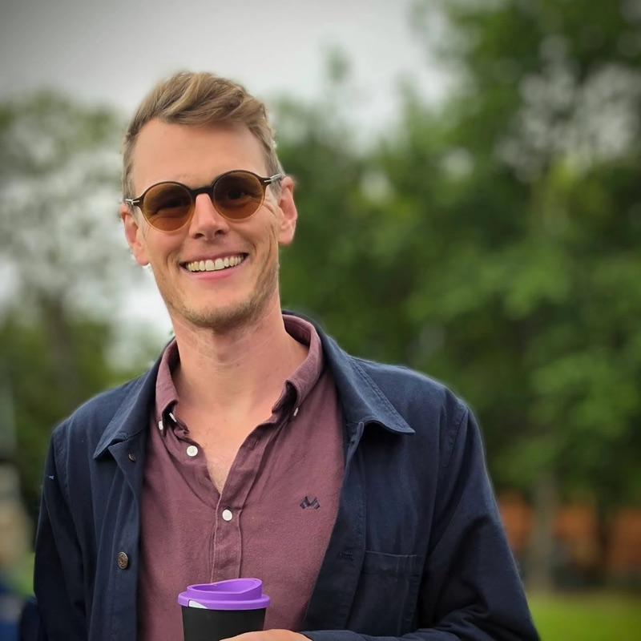
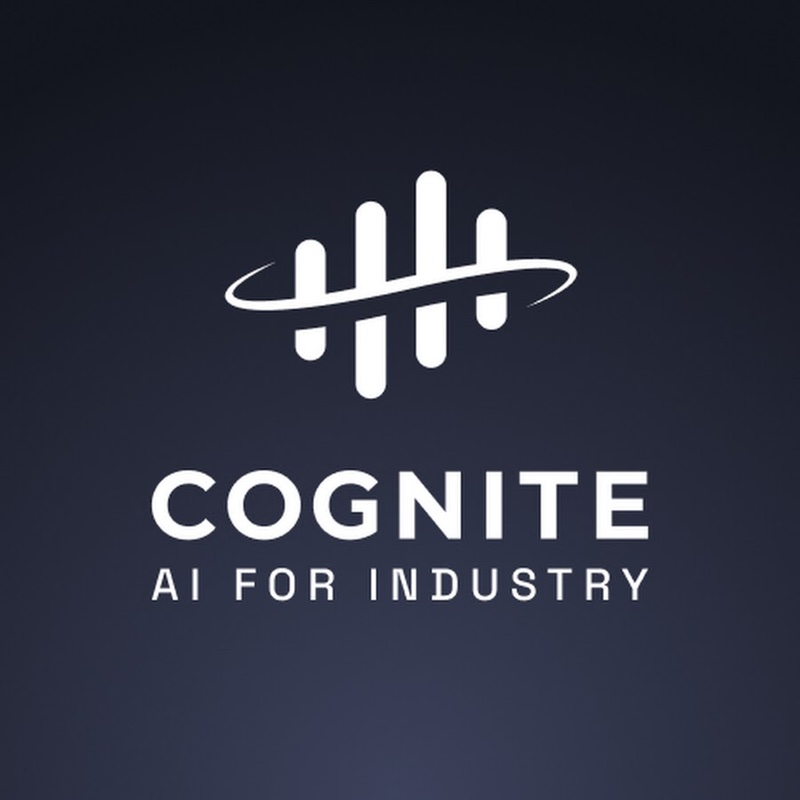
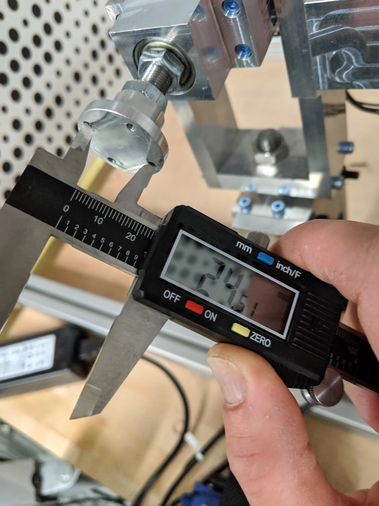
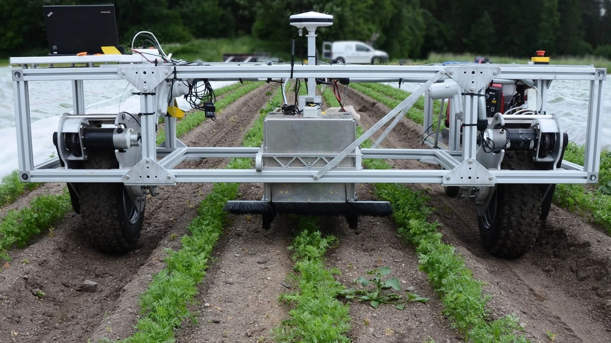
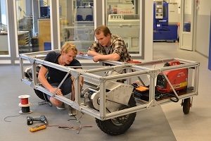
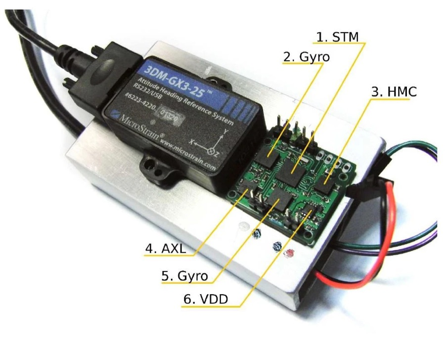
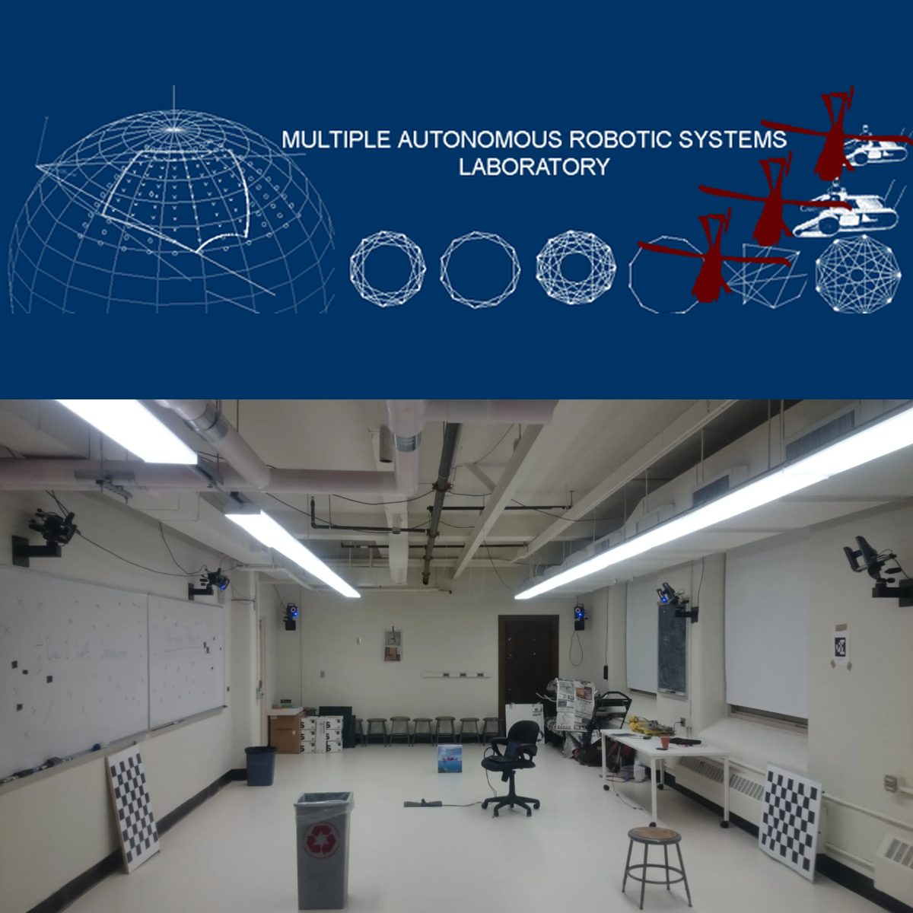
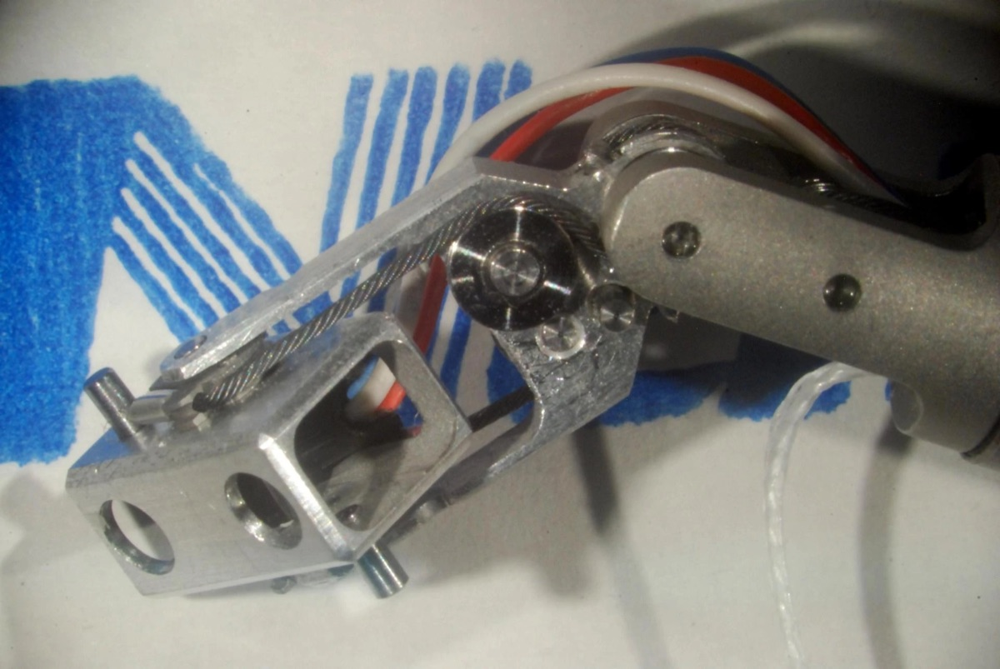

Trygve Utstumo, PhD
From Norse, hard to pronounce, Trig for short
A farm in Dalsbygda (not Japanese)

Engineer and engineering leader in AI, robotics and industrial data. Ph.D. in engineering cybernetics. Former Googler. Based in Oslo.
About
I've worked across embedded software, augmented reality and field robotics, and more recently led a 50-person engineering organisation building generative AI for industrial data. At Google I helped take ARCore from launch to 100 million Android devices. My Ph.D. work on precision weed control became the Kilter robot, which Kubota now distributes in Europe.
Today I'm a Principal Staff Engineer at Cognite, working on Custom Flows.
Work
-

2019 – present · 7 years
Cognite
Roles ranging from robotics lead and lead engineering manager to, now, Principal Staff Engineer on Custom Flows.
-

2017 – 2019
Google ARCore / Daydream
Device calibration for augmented reality with Qualcomm, Samsung, Sony and Pixel. Clock synchronisation between IMU and camera, data collection for Pixel face unlock, and thermal debugging.
-

Education
-


2005 – 2018
PhD and MSc, engineering cybernetics · NTNU
Industrial PhD on weed detection and control in row crops. Supervised six master’s students and co-supervised PhD candidate Johan Hatleskog.
-

2015
Visiting researcher · University of Minnesota, MARS Lab
Studied visual-inertial navigation systems under Prof. Stergios Roumeliotis.
-

2010
Erasmus exchange · EPFL, Lab de microtechnique
A pan-tilt stereo camera for laparoscopic surgery, small enough to go through an 8 mm port. Namiki servos sit outside the assembly and drive the head through a balanced 0.45 mm tungsten cable. Designed in SolidWorks, machined in stainless 316 and aluminium 7075 at l’Atelier de l’Institut de Microtechnique, where I also assembled it. The project later spun out as Distalmotion.
With Prof. Hannes Bleuler, Dr. Ricardo Beira and Dr. Laura Santos.